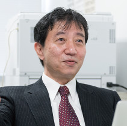

教員紹介
| Big Data / Mining Field | Kaoru Katayama Yasufumi Takama Shohei Yokoyama Shibata Hiroki Hiroshi Ishikawa |
| Artificial Intelligence / Natural Language Processing Field |
Shogo Okamoto Nobuyuki Nishiuchi Eri Shimokawara Takao Fukui Yosuke Fukuchi Wakako Fushikida |
| Social Multimedia Field | Masaki Aida Takahiro Matsuda Nobutaka Ono Sayaka Shiota Daisuke Sugimura Taishi Nakashima Kazuki Nakajima Hachiro Fujita Hitoshi Kiya Masaaki Fujiyoshi |
Professor
Masaki Aida

Information Networks / Online Social Networks / Network Science / Autonomous Decentralized Control / Social Network Analysis
Shogo Okamoto

Haptics / XR・VR / Affective science and engineering / Assistive system / Food science
Nobutaka Ono

Acoustic Signal Processing / Microphone Array / Source Separation / Sound-to-Light Conversion / Environmental Sound Recognition / Machine Learning
Kaoru Katayama

3D models/3D data analysis/Retrieval/Computer-Aided Design/Data Engineering
Yasufumi Takama

Web intelligence / Information visualization / Recommender systems / Interactive systems / Data mining
Nobuyuki Nishiuchi

Human–Computer Interaction/Usability/User Experience/Biometrics
Takahiro Matsuda

Information and Communication Networks / Wireless Networks /Communication Quality / Network Diagnostics / Network Measurement
Associate Professor
Sayaka Shiota

Speech Information Processing / Speaker Recognition / Spoofing Speech Detection / Voice Privacy / Deep learning
Eri Shimokawara

Multimodal Intelligent Systems / Human–Robot Interaction / IoT / Social and Community-Support Robotics
Daisuke Sugimura

Computer Vision / Image Processing / Computational Imaging / Machine Learning
Takao Fukui

Cognitive Science / Perception and Action / Physical and Virtual Environments / Individual Differences / Eye Tracking / Three-Dimensional Motion Analysis
Shohei Yokoyama

Data Science / Data Engineering / Social Big data Analysis / Spatio-Temporal Data
Assistant Professor
Shibata Yuki
Recommender system/Artificial Intelligence/Optimization
Kazuki Nakajima

Complex Systems/Network Science/Social Network Analysis/Data Mining
Taishi Nakashima

Acoustic Signal Processing/Array Signal Processing/Blind Source Separation
Yosuke Fukuchi

Human-AI Inteeraction / Computational Cognitive Science / Human-agent Interaction / Cognitive Dynamics
Hachiro Fujita

Communication s S ystems/ Coding Theory/Cryptography
Special Lead Professor
Hiroshi Ishikawa
data science/data engineering/generative AI/scientific research method/hypothesis generation·interpretation/big data
Hitoshi Kiya

Signal Processing / Image, Video and Audio Processing / Data Compression / Social Media / Multimedia Security and Forensics
Graduate School Adjunct Faculty
Professor
Masaaki Fujiyoshi

image processing/media-aware security/value-added media information processing/cyber-physical linkage
Wakako Fushikida

Educational Technology/Cognitive Psychology/Information Literacy Education/Seminar Education/Quantitative Analysis/Qualitative Data Analysis